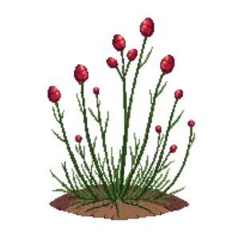

New Zealand Burr 'Kupferteppich'
Acaena microphylla 'Kupferteppich'

New Zealand Burr 'Kupferteppich' is a perennial for edging, groundcover, suited to full sun to partial shade and loam or sandy soil, flowering varies by climate.
| Type | Perennial |
|---|---|
| Mature height | 10 cm |
| Spread | 60 cm |
| Aspect | full sun to partial shade |
| Foliage | Evergreen |
| Hardiness | USDA 6a-9b, RHS H4 |
| Pollinator-friendly | No |
| Pet-safe | Not confirmed |
Where to use it in a border
At around 10 cm, it sits best along the front edge, where a low, spreading habit reads best. Give it about 60 cm of room to spread. It is hardy across USDA zones 6a to 9b and rated H4 by the RHS, so check it suits your area before planting.
It appears in our lists of full sun, sandy soil, evergreen plants.
Flowering through the year
JFMAMJJASOND
Worth knowing
- Evergreen, so it keeps the border furnished through winter.
Good companions
Plants that share its conditions and style, chosen to complement its place in the border:
- Abelia 'Kaleidoscope'for height behind it
- African lilyfor height behind it
- African Lily 'Headbourne Hybrids'for height behind it
- African lily 'Northern Star'for height behind it
- Bird of Paradisefor height behind it
- Black Sagefor height behind it
Garden styles
See New Zealand Burr 'Kupferteppich' set in a full border, with spacing and companions worked out for your own conditions, in Border Builder.